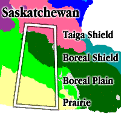
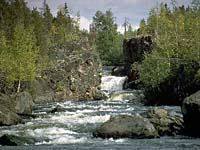
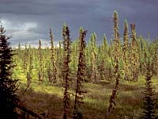
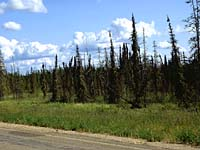
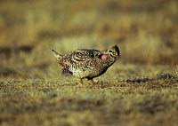
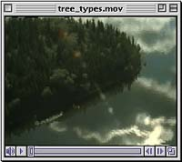

Saskatchewan has an abundance of forest resources. Approximately 288 000 km2 or 44 percent of the province is classified as forested land, of which 42 percent or 120 000 km2 is considered non-reserved, productive and available for timber management. |
 Vegetation Zones: Saskatchewan can be divided into four main vegetation areas: taiga shield, boreal shield, boreal plain and prairie (or grassland). Commercial timberlands fall primarily in the boreal zones. |
 Precambrian Shield rock outcrops are visible in the most northern region of this area. Trees are stunted and shrub-like due to the extreme cold. They provide only limited cover for wildlife. Further south, forests consist of medium to tall stands of black spruce, jack pine and birch; and wildlife is more variable and abundant. |
 Most of this area is accessible due to the building of roads. The main commercial stands are found in the southern areas of this region. The main saw timber species -- white spruce -- grows to heights of more than 30 meters and a base diameter up to 1.8 meters. The southern area of this forest area provides major recreational facilities as well. |
 The main commercial forest belt, consisting of aspen, pine and black spruce, is located here. Further south is the transition stage between the southern plains and the commercial forest belt, and is characterized by small bluffs of trembling aspen. They are valuable as far as soil, water and wildlife are concerned. |
 Trees did not generally grow in this area before the coming of the white man. This was a natural plains area and tree growth was also discouraged by prairie fires and the thick matted grass cover which prevented tree seeds from finding root. However, the planting shelterbelts has proven that trees will grow on prairies. These trees have proven valuable especially by limiting wind erosion on soil and by increasing moisture supply and wildlife habitat. |
Types of Trees
 The following tree types can be found in certain locations throughout Saskatchewan. Each tree type is valued for specific qualities; for both commercial and non-commercial use. |
- Hardwood Species:
- White birch
- White elm
- Plains cottonwood
- Manitoba maple
- Trembling aspen
- Balsam poplar
- Softwood Species: